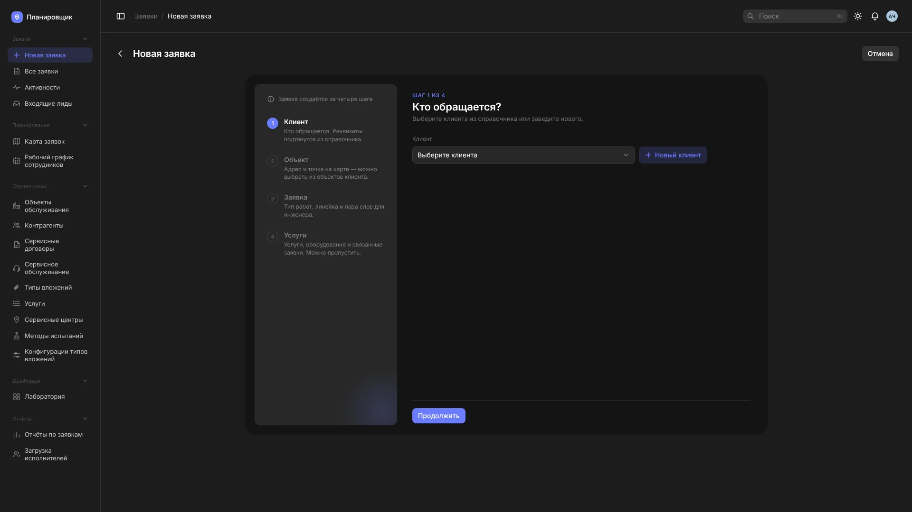
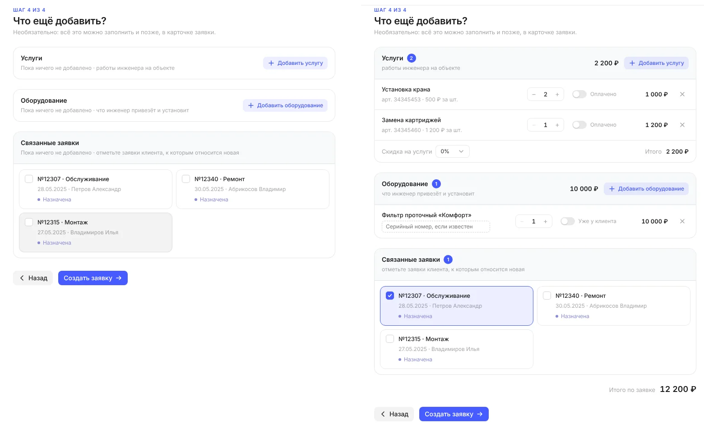
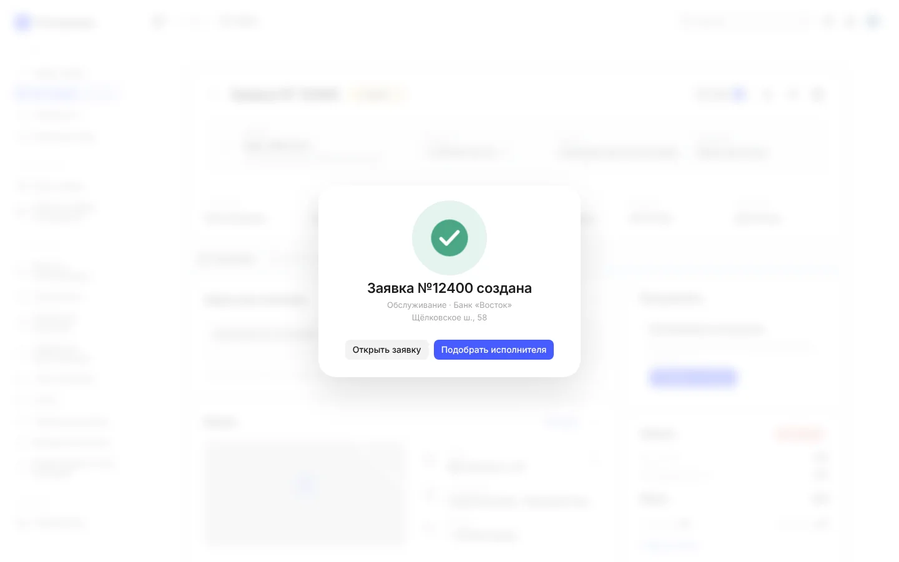
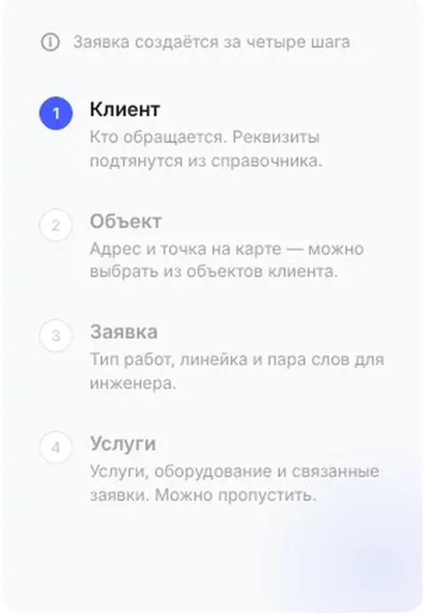
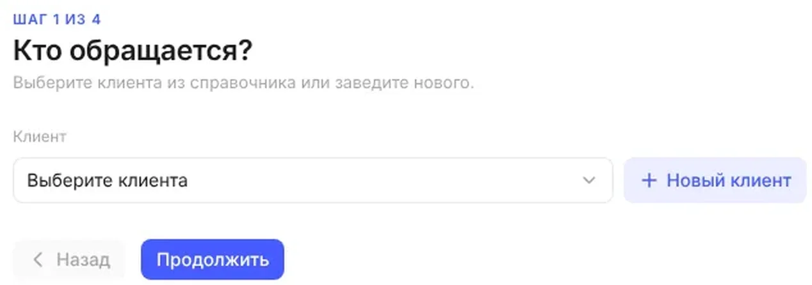

01 · Создание
Заявка за четыре шага
Вопрос
Заявку заполняли с нуля, даже если клиент и объект уже были в системе.
Решение
Мастер «Клиент → Объект → Заявка → Услуги», на каждом шаге одно решение. Обязательных полей два, клиент и адрес, остальное подставляется из справочников.
Почему
Заявку из лида или из оборудования объекта мастер открывает уже заполненной.




